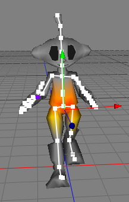

Skeleton Tag
The skeleton tag will be used to bind a mesh to a skeleton. Once the mesh is correctly bound to the skeleton the mesh will follow the skeleton. The process of bind a mesh to a skeleton is also often called "skinning".
Attention: You can only add a skeleton tag to polygon objects.
To bind a mesh to a skeleton you first have to create a skeleton with help of the joint tool. Once you have modeled your character and created the skeleton attach a skeleton tag to the character mesh.

Now select the skeleton tag. The tag will be highlighted with a red frame and the skeleton tag properties will appear in the properties browser. Then drag and drop the root joint of your skeleton (in case of a human skeleton that is the "Pelvis" joint) to the "Joint" table of the skeleton tag.
 |
|||
All the joints of the skeleton will now appear in the "Joint" table. Finally click on the "bind mesh" button and the mesh will be bound to the skeleton. If you now select a joint from within the Joint table the vertex weights of that joint will be displayed in the 3D view. To adjust these weights you can use then vertex weight tool.

Properties
- max. influence: The max. number of joints which can influence a mesh vertex. Values of 2-4 are normally enough.
- dropoff rate: The dropoff rate of the influence of an joint. The higher this value the faster a joint will lose its influence on vertices.
- bind mesh: Click on the "OK" button to bind the mesh to the skeleton. Performing this command calculates the vertex weights for each joint.